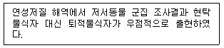
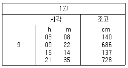
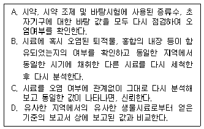
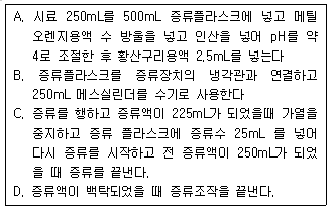
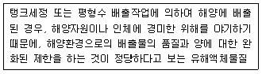
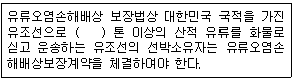

해양환경기사 (2011-06-12 기출문제)
1과목: 해양학개론
1. 다음 중 해저의 지반암에서 채취할 수 있는 에너지 자원으로 가장 가능성이 높은 것은?
- 석회암
- 석유
- 망간단괴
- 암염
(정답률: 76%)

2. 퇴적년대 측정에 쓰이는 210Pb법은 지각 중에 들어있는 238U이 방사붕괴되어 생성된 210Pb의 농도를 측정함으로써 얻어진다. 이때 238U과 210Pb의 중간계열에 속하는 기체인 동위원소는?
- 210Bi
- 222Rn
- 210Po
- 206Pb
(정답률: 85%)
3. 해수 중 탄산염은 여러가지 상태로 존재한다. 해양의 정상pH(pH 8.1) 조건하에서 가장 풍부한 것은?
- CO32-
- H2CO3
- CO23-
- HCO3-
(정답률: 87%)
4. 챌린저호의 탐험 후 챌린저 보고서를 작성하고 심해저 연니에 관한 연구를 한 사람은?
- Charles Darwin
- John Murray
- Vening Meinesz
- Bruce Heezen
(정답률: 87%)
5. 대륙지각과 해양지각의 경계선은 보통 다음 중 어느 곳에 위치하는가?
- 해안선
- 대륙붕
- 대륙사면
- 해구
(정답률: 69%)
6. 우리나라 주변해의 수괴 중 가장 온도가 낮은 것은?
- 동해고유수
- 황해저층냉수
- 대마난류
- 북한한류수
(정답률: 83%)
7. 다음 중 해수의 염분 증가에 가장 큰 영향을 미치는 과정은?
- 증발
- 강우
- 해수의 결빙
- 해빙의 융해
(정답률: 80%)
8. 다음 영양염원소 중 가장 다양한 열역학적 산화환원과정을 갖는 것은?
- N
- P
- Si
- Ca
(정답률: 77%)
9. 해수 중 탄소의 방사성 동위체 농도를 측정함에 의해 간접적으로 해수의 연령을 알수 있다. 다음 중 연령이 가장 오래된 것은?
- 대서양 북부의 심층수
- 태평양 북부의 심층수
- 대서양 북부의 중층수
- 태평양 북부의 중층수
(정답률: 81%)
10. 퇴적물의 침식, 이동에서 가장 적은 유속으로 침식시킬 수 있는 저질은?
- clay
- silt
- fine sand
- heavy sand
(정답률: 75%)
11. 해양 유전에서 가장 많다고 예상되는 산유층은?
- 제 4기층
- 제 3기층
- 백악기층
- 쥐라기층
(정답률: 77%)
12. 계절 수온약층과 관련이 가장 적은 것은?
- 여름에 형성된다
- 수온의 수직구배가 크다
- 주로 내만에서만 형성된다
- 겨울철에는 약해지거나 사라진다
(정답률: 81%)
13. 지진성 해일인 쓰나미가 수심 1km인 해양에서 전파되는 속도는 얼마인가?
- 10m/sec
- 100m/sec
- 1000m/sec
- 10000m/sec
(정답률: 85%)
14. 천해파의 군속도와 위상속도와의 관계는?
- 군속도는 위상속도의 0.5배이다
- 군속도와 위상속도가 같다
- 군속도는 위상속도의 1.5배이다
- 군속도는 위상속도의 2배이다
(정답률: 80%)
15. 다음 중 방사성 핵종의 붕괴방정식으로 맞는 것은? (단, A는 시간 t 경과 후 방사능 농도, A0는 초기의 방사능 농도, λ는 붕괴상수, t는 시간이다)
- A=A0*ln(-λt)
- A0=A*ln(-λt)
- A0=Ae-λt
- A=A0e-λt
(정답률: 79%)
16. 다음 중 서안경계류는?
- 쿠로시오 해류
- 노르웨이 해류
- 북대서양 해류
- 페루해류
(정답률: 85%)
17. 해수의 평균 pH값이 약 8 정도이다. 수소이온농도가 증가했다면 어떤 형태의 이온의 조성비가 커져야 하는가?
- CO2
- H2CO3
- HCO3-
- CO32-
(정답률: 54%)
18. 지구상에 일어나는 조석 중 다음 어느 경우가 최소 조차를 보이는가?
- 달과 태양의 위치가 지구에 대해 서로 반대방향으로 일직선상에 있을 때
- 달과 태양의 위치가 지구에 대해 직각을 이룰 때
- 달과 태양의 위치가 지구에 대해 같은 방향으로 일직선상에있을 때
- 달과 태양의 위치가 지구에 대해 약 45도 각도를 이룰 때
(정답률: 83%)
19. 대마난류와 무관한 것은?
- 쿠로시오의 한 지류다
- 한반도 남동해안과 일본서안을 따라 북상한다
- 수온이 높은 해수를 동해에 유입시킨다
- 염분도가 낮은 해수를 동해에 유입시킨다
(정답률: 75%)
20. 파랑의 에너지 파고(H)의 얼마에 비례하는가?
- H-1/2
- H1/2
- H
- H2
(정답률: 86%)
2과목: 해양생태학
21. 염습지를 구성하는 생물로서 우리나라의 염습지에서 주로 발견되는 식물은?
- 망그로브
- 칠면초
- 스파르티나
- 모자반
(정답률: 81%)
22. 크기에 의한 저서동물의 구분과 관련된 내용 중 틀린 것은?
- 소형 저서동물은 그물코 0.1mm의 체를 통하는 유공충류, 섬모충류이다
- 초대형 저서동물은 어망이나 트롤로 채집되며, 저어류, 불가사리류가 속한다
- 대형 저서동물은 그물코 1.0mm의 체에 걸리고, 복족류, 이매패류가 속한다.
- 중형 저서동물은 그물코 0.5mm에 걸리고 저서요각류, 성충류가 속한다
(정답률: 72%)
23. 성게류가 섭식활동을 할 때 사용하는 기관은?
- 치설
- 자포
- 아리스토틀의 등
- 촉수
(정답률: 84%)
24. 우리나라 하구역에서 흔히 볼수 있는 종이 아닌 것은?
- 다랑어
- 숭어
- 전어
- 잘피
(정답률: 79%)
25. 해양 생태계를 표영계와 저서계로 구분할 때 다음 중 저서계를 설명한 것은?
- 부유생물이나 유영생물이 서식한다
- 연안역과 대양역으로 나눌수 있다
- 담수, 용승류, 조석 혼합으로 생산력이 높다
- 조간대, 조하대, 심해대로 나눌 수 있다.
(정답률: 81%)
26. 심해 열수구에서 화학합성박테리아의 역할에 대한 설명 중 틀린것은?
- 무기물의 산화에 의해 발생하는 에너지를 사용하여 유기물을 합성한다
- 대부분의 종은 산소를 요구하지 않는다
- 이들을 생산자로 기능하는 생태계를 화학합성 생태계라고 한다
- 펄 갯벌의 혐기층에서는 환원황화합물 등의 산화를 통하여 에너지를 얻는다
(정답률: 84%)
27. 회유의 종류를 색이회유, 산란회유, 성육회유, 계절회유, 삼투조절회유, 양측회유로 구분할 때 다음 어류 중 삼투조절회유와 관계가 가장 깊은 것은?
- 고등어
- 숭어
- 연어
- 뱀장어
(정답률: 68%)
28. 연안수역에서 부영양화의 심화와 관계되어 일어날 수 있는 현상은?
- 어류의 대량 회유
- 적조발생과 산소감소
- 어류 및 패류의 산란유발
- 패류의 급격한 성장과 산소의 증가
(정답률: 85%)
29. 새우류의 유생 변태과정이 알맞은 것은?
- 노플리우스 - 조에아 - 미시스
- 노플리우스 - 미시스 - 조에아
- 조에아 - 노플리우스 - 미시스
- 조에아 - 미시스 - 노플리우스
(정답률: 82%)
30. 우리나라 서해안에 발달한 갯벌에는 지역에 따라 다양한 종류의 저서동물들이 높은 밀도로 서식하고 있다. 이 가운데 고생대에서부터 서식하던 살아있는 화석종은?
- 개맛
- 서해비단고둥
- 민챙이
- 칠게
(정답률: 71%)
31. 산소농도의 값과 pH값에 의한 해양환경에 대한 설명이 옳은 것은?
- 높은 산소농도와 높은 pH의 곳은 광합성이 활발한 해역이다.
- 높은 산소농도와 높은 pH의 곳은 호흡작용이 활발한 해역이다.
- 낮은 산소농도와 높은 pH의 곳은 광합성이 활발한 해역이다.
- 낮은 산소농도와 높은 pH의 곳은 호흡작용이 활발한 해역이다.
(정답률: 66%)
32. 해수의 부영양화(eutrophication) 현상이 나타나는 이유의 설명 중 틀린것은?
- 육지로부터의 영양염 과다공급
- 도시의 생활하수 및 산업폐수의 유입
- 불충분한 해수의 순환
- 기초생산력의 증가
(정답률: 79%)
33. 저서동물 유생의 해저 정착에 영향을 주는 요인과 가장 관계가 먼 것은?
- 광합성 식물의 존재여부
- 성체로부터 나오는 유인물질
- 퇴적물 표면에 발달된 박테리아 피막
- 유생자신의 주광성과 배광성
(정답률: 78%)
34. 중형저서동물의 퇴적물 내 수직분포에 대한 설명 중 틀린 것은?
- 중형저서동물의 대부분은 깊이에 있어서 퇴적물의 표층에서 10cm 이내에 거의 90% 이상이 산다.
- 퇴적물 내 수직분포는 무기 환경요인 중에서는 산소가 중요하다고 생각되고 있으나 보다 대형의 생물에 의한 포식도 중요하다는 견해가 많다.
- 산소가 없는 퇴적물의 환원층에는 중형저서동물군을 사실상 거의 발견 할 수 없다.
- 특히 온대지방의 중형저서동물은 퇴적물 내에서 수직이동 현상이 잘 나타나는데 주로 온도와 염분에 의한 것으로 생각되고 있다.
(정답률: 72%)
35. 해양의 일차생산력을 구하는 측정방법이 아닌 것은?
- 명암병 측정법
- C-13 측정법
- 부유식물 현존량 변화 측정법
- 보상수심 측정법
(정답률: 68%)
36. 산호초에 관한 설명 중 옳지 않은 것은?
- 산호는 해파리와 같은 자포동물에 속하며 식물성 플랑크톤의 조류와 공생한다.
- 산호초가 형성되는 곳은 수온이 높고 수심이 얕아야 한다.
- 서식환경은 물이 깨끗하고 염분이 높아야 한다.
- 산호초가 형성되기 위해서는 담수의유입이 많아야 한다.
(정답률: 78%)
37. 보통 해수 표면 광도 1%정도 되는 깊이이며, 유광층의 깊이 한계를 의미하는 것은?
- 임계심도
- 보상심도
- 산란심도
- 포화심도
(정답률: 77%)
38. 유영동물의 유영을 위한 적응 가운데 어류가 가능한 둥근 형태를 나타내는 것은 어떠한 저항을 줄이기 위한 적응인가?
- 마찰저항
- 형태저항
- 난류저항
- 끌림저항
(정답률: 69%)
39. 아래 현상을 설명할 수 있는 가장 적절한 것은?

- 영양군 편해작용
- 생물교란
- 유생의 분산
- 산화-환원층
(정답률: 71%)
40. 우리나라 갯벌에서 굴을 파고 서식하는 종류들을 U자형, Y자형, I자형 등의 다양한 모양의 굴을 만들어서 서식하고 있는데, 다음중 Y자형의 굴을 파고 서식하는 대표적인 종류는?
- 쏙
- 민챙이
- 칠게
- 게불류
(정답률: 73%)
3과목: 해양계측학
41. 기압의 변화에 따라 해면의 수위가 변동한다. 해면상의 기압이 1hpa 증가할 때 해면 수위의 변동은?
- 약 1cm 하강
- 약 1mm 하강
- 약 1cm 상승
- 약 1mm 상승
(정답률: 72%)
42. 퇴적물의 입도 분석자료를 정량적으로 분석하기 위해 계산하는 분급도란?
- 분포곡선의 평균 기울기
- 분포곡선의 뾰족한 정도
- 평균값을 중심으로 한 분산정도
- 평균값을 중심으로 한 대칭성
(정답률: 80%)
43. 다음의 관측장비 중 지구자장의 원리를 이용하는 것은?
- G.E.K.
- C.T.D.
- B.T.
- T-S bridge
(정답률: 85%)
44. 오일러법(Eulerian method)에 속하는 것은?
- 고정된 점에서 해류를 시간에 따라서 측정한다.
- 부표를 표류시켜 그 위치를 시간에 따라서 측정한다.
- 염료를 바다에 풀어 측정한다.
- 배가 해류에 밀린 모양을 측정한다.
(정답률: 79%)
45. 심해 저층부근에 있어서 수평류의 유속은 유속계의 측정이 가능하지만 수직혼합속도의 직접측정은 매우 어렵다. 그러나 해저퇴적물로부터 용출되는 방사성 핵종의 수직농도분포를 측정하여 해저로부터 약 100m 정도의 범위에서 해수의 혼합속도를 추정할 수 있다. 다음 중 수직혼합속도를 측정하는데 가장 적합한 방사성 핵종은?
- 222Rn(반감기 : 3.8일)
- 226Ra(반감기 : 1622년)
- 238U(반감기 : 4.5×109년)
- 234Th(반감기 : 24일)
(정답률: 78%)
46. SEASAT과 같은 위성이 ALT 센서 시스템으로 바다의 수위나 파고를 측정하고자 할 경우, 센서가 측정해야 할 요소는?
- 전자파의 왕복시간
- 수중 후방산란계수(Back scatter coefficient)
- 반사에너지
- 수중 감쇄 광량
(정답률: 82%)
47. 함수비 시험은 대게 어떠한 저질 시료에 대해 행하는가?
- Sand 질 시료
- Mud 질 시료
- Gravel 질 시료
- Boulders 질 시료
(정답률: 80%)
48. 다음 중 해저의 지층구조를 밝히는데 가장 많이 사용되는 기기는?
- 드렛지
- 채니기
- 박스코아러
- 에어건
(정답률: 66%)
49. 퇴적물 식별에 이용되는 음파탐사법 중 해저 아래 수백 m까지를 탐사하는데 적용되는 주파수는?
- 5kHz 전후
- 1kHz 전후
- 수백 Hz
- 수십 Hz
(정답률: 79%)
50. 조화분석(Harmonic analysis)이란?
- 조석자료만의 분석방법
- 연속관측 자료에 나타나는 주기별 에너지 계산 방법
- 여러 가지 관측자료를 조화시켜 분석하는 방법
- 특정주기의 진폭 및 위상을 구하는 방법
(정답률: 68%)
51. 퇴적물에 포함된 유기물이나 석회질을 제거하는 방법 중 틀린 것은?
- 저열 oven(sand oven)에서 가열하면서 H2O2 용액과 몇방울의 암모니아수를 가하여 유기물을 제거한다.
- 시료에 유기물이 많이 포함되어 있으면 H2O2 용액과 암모니아 수 반응이 격렬하므로 이때는 염산을 조금씩 가하여 조절한다.
- 석회질은 염산용액(약 30%)을 가하여 제거시킨다.
- 광물학적 분석을 병행할 경우의 석회질 제거는 약한 염산액(약 10%)을 사용하여 pH가 3이하로 내려가지 않도록 한다.
(정답률: 67%)
52. 위성을 이용한 해양 관측의 장점으로 틀린 것은?
- 광범위 해역에 대한 동시 관측
- CTD 관측의 대용
- 궤도 특성을 이용한 반복 관측
- 현장 관측이 곤란한 해역의 관측
(정답률: 78%)
53. 전도온도계로써 얻을 수 있는 정확도는?
- ± 1℃
- ± 0.1℃
- ± 0.01℃
- ± 0.001℃
(정답률: 86%)
54. 다음 중 시추된 시료의 양과 관계가 먼 것은?
- 퇴적물의 종류
- 시추기의 무게
- 시추기의 길이
- 해수의 밀도
(정답률: 77%)
55. 정상적인 해수가 결빙하는 온도는?
- -20℃
- -15℃
- -2.9℃
- -1.9℃
(정답률: 64%)
56. 다음 중 대기의 창에 해당되는 영역은?
- 자외선
- 가시광선
- 적외선
- 마이크로파
(정답률: 71%)
57. 다음 중 염분을 측정하는데 있어서 이용되지 않는 것은?
- 해수의 혼탁도
- 수중 음향속도
- 전기전도도
- 염소량
(정답률: 77%)
58. 다음의 조석표는 인천항의 조석을 나타낸 것이다. 인천항의 12시 정각의 조고는? (단 평균해면은 464cm, 표차는 0.581이다.)

- 약 480cm
- 약 456cm
- 약 423cm
- 약 399cm
(정답률: 79%)
59. 조류의 예보방법에서 해면차를 이용하지 않는 것은?
- 비조화법
- 조화법
- 개정수법
- 분조법
(정답률: 61%)
60. 일조부등이란?
- 고조와 고조사이의 시간간격
- 고조의 높이
- 고조와 저조의 높이차
- 1일 2회 반복되는 조석이 같지 않는 것
(정답률: 80%)
4과목: 해수의 수질분석
61. Microtox bioassay 기법 중 유기용매추출법에 의한 독성평가 방법의 특징이 아닌 것은?
- 공극수가 제거된 퇴적물을 대상으로 한다
- 추출용매는 주로 염화메틸렌을 사용한다
- 주로 중성 또는 비이온성 유기물질의 독성을 검색한다
- 전처리 과정이 단순하다
(정답률: 60%)
62. ICP-MS를 이용하여 중금속 분석을 할 때 사용되는 Ar(알곤)기체의 순도로 적절한 것은?
- 70%
- 80%
- 90%
- 99.999%
(정답률: 80%)
63. 암모니아성 질소 측정 때 알칼리성에서 발색시약과 암모니아가 반응하여 인도페놀을 형성하는 것을 비색정량이라 한다. 해수인 경우 알칼리성에서 마그네슘 이온의 침전이 일어나는 것을 방지하기 위해 어떤 조치를 취하는가?
- 차아염소산나트륨을 첨가한다
- 니트로프러시드를 첨가한다
- 구연산나트륨을 첨가한다
- 페놀을 첨가한다
(정답률: 60%)
64. 해수의 분석방법 중 용매 추출방법을 사용하지 않는 것은?
- 알킬수은
- 유기인
- 시안
- PCBs
(정답률: 68%)
65. Microtoxic bioassay 시험방법 중 염수추출법을 위한 퇴적물 시료 채집 및 전처리 방법으로 옳지 않는 것은?
- 용기 내에 빈 공간이 없도록 퇴적물을 가득 채워 채집한다
- 정점 당 최소한 200g 의 퇴적물을 확보한다
- 시료는 4℃, 어두운 곳에 보관한다
- 채집 후 1개월 이내에 시험해야 한다
(정답률: 80%)
66. 해양생물 시료를 채취할 때의 주의사항으로 틀린 것은?
- 해양생물의 수평과 수직분포 변화가 잘 나타날 수 있도록 채취지점의 간격과 수를 결정한다.
- 동일 채취지점에서 시료의 통계적 유의성을 확보하기 위하여 농도에 따라 시료의 반복갯수를 증감한다.
- 시료용기는 조사항목에 따라 경질의 유리 또는 고밀도 폴리에틸렌 용기를 선택하여 사용한다
- 중금속 분석용 생물시료는 청장(depuration)을 고려하지 않는다
(정답률: 85%)
67. 어떤 용액의 흡광도를 5cm 셀을 사용하여 측정한 결과 흡광도 A=0.440이였다. 동일한 용액을 1cm 셀로 측정한다면 흡광도는 얼마인가?
- 0.044
- 0.088
- 0.220
- 0.440
(정답률: 77%)
68. 유기인 분석을 위해 사용되는 분석장비에 이용되는 carrier gas의 종류는?
- O2
- CO2
- He
- Ne
(정답률: 77%)
69. 다음 중 시료를 해양환경공정시험법상의 시료 보존방법에 의해 보존할 때 최대 보존기간이 가장 짧은 것은?
- 대장균군
- 6가 크롬
- 유기인
- 부유물질
(정답률: 78%)
70. 질산염의 분석원리를 가장 잘 설명한 것은?
- Cd와 Cu가 충진된 유리관에 시료를 넣어 시료에 존재하는 질산염을 산화시켜 아질산염으로 만든 후, 아질산염을 시약들과 반응시켜 발색된 상태에서 흡관도를 측정한다.
- Cd와 Cu가 충진된 유리관에 시료를 넣어 시료에 존재하는 아질산염을 산화시켜 질산염으로 만든 후, 질산염을 시약들과 반응시켜 발색된 상태에서 흡광도를 측정한다
- Cd와 Cu가 충진된 유리관에 시료를 넣어 시료에 존재하는 질산염을 환원시켜 아질산염으로 만든 후, 아질산염을 시약들과 반응시켜 발색된 상태에서 흡광도를 측정한다.
- Cd와 Cu가 충진된 유리관에 시료를 넣어 시료에 존재하는 아질산염을 환원시켜 질산염으로 만든 후, 질산염을 시약들과 반응시켜 발색된 상태에서 흡광도를 측정한다.
(정답률: 82%)
71. 분석자료의 통계처리와 표현방법에 대한 일반적인 내용 중 틀린 것은?
- 정확도는 참값과 측정값과의 편차를 뜻하며, 일정한 편차로 표현되는데 이러한 편차는 보정되지 않는 기기를 사용할 때 일어난다.
- 모든 시료의 농도는 반드시 4종류 이상의 상이한 검정농도와 이에 대한 분석신호를 변수로 한 통계적인 회귀직선법에 의해 결정된 검정관계식을 이용하여 구한다.
- 표준편차는 복수시료 측정 시 평균값을 중심으로 한 분산정도를 나타낸다.
- 정밀도란 지정된 공정시험방법에 따라 시험하였을때 바탕용액 농도의 오차범위와 통계적으로 다르게 나타나는 최소의 측정 가능한 농도를 의미한다.
(정답률: 57%)
72. COD 값의 감소요인이 되는 것은?
- 제 1철 이온
- 염소이온
- 아질산이온
- 크롬산이온
(정답률: 50%)
73. 해양생물시료(예를 들면 홍합)로부터 분석한 중금속 분석 시료 중 약 10%에서 분석한 결과가 기대치 이상으로 매우 높게(10배 이상) 나타나서 이를 확인하기 위하여 다음과 같은 사항을 점검하였다. 다음 중 틀린 것은?

- A
- B
- C
- D
(정답률: 86%)
74. 해수 중 용매추출유분 측정에 관한 사항 중 옳은 것은?
- 노말헥산으로 추출한 다음 유기용매를 증발시킨 후 잔류물의 무게를 재어 측정한다.
- 염화메틸렌으로 추출한 후 유기용매를 증발시킨 후 노말헥산에 재용해시켜 형광법으로 측정한다.
- 염화메틸렌으로 추출한 후 유기용매를 증발시킨 후 노말헥산에 재용해시켜 흡수분광법으로 측정한다.
- 노말헥산으로 추출한 다음 유기용매를 10mL 정도 되도록 증발농축시킨 후 적외선 흡수분광법으로 측정한다.
(정답률: 65%)
75. 비소를 측정하기 위해 원자흡광광도법을 이용하여 실험할 경우 틀린 것은?
- 불꽃에서 원자화시켜 193.7nm에서 흡광도를 측정한다
- 전처리과정으로 pH 2이하로 산처리하여 보관한다
- 채취된 해수시료는 염으로 세척한 유리병에 저장하고 1L 당 4mL의 질산을 첨가하여 산성화한다.
- 해수시료 50mL를 환원기화장치에 넣고 트리스완충용액 1mL를 가한 후 헬륨을 3분간 흘려주어 시료 중의 공기를 제거한다.
(정답률: 55%)
76. 흡광광도법(4-아미노 안티피린법)에 의한 페놀류 분석의 시료 전처리 방법이 잘못된 것은?

- A
- B
- C
- D
(정답률: 69%)
77. 생체 내 함유되어 있는 구리(Cu)를 원자흡광광도계로 분석하는 시험방법 설명 중 잘못된 것은?
- 동결건조 또는 90± 5℃에서 48시간 이상 건조 후 분마된 1g의 시료를 정량한다
- 생체시료 10g을 250mL 파이렉스 코니칼비이커에 넣고 10mL의 질산을 가한다
- 실온에서 초기 반응을 끝낸 후에 시계접시가 덮여진 코니칼비이커를 열판 위에 올려놓고 100± 5℃에서 4시간 가열한다
- 측정시 파장은 440nm, 슬릿너비는 0.7nm에서 측정한다.
(정답률: 58%)
78. 적정법을 이용한 유기탄소량을 측정할 경우 사용하는 시약이 아닌것은?
- 중크롬산칼륨 용액
- 황산암모늄제이철 용액
- 글루코오즈 용액
- 페놀프탈레인 지시약
(정답률: 54%)
79. 강열감량방법의 단점으로서 옳은 것은?
- 광물격자 안의 수분과 약한 화합물들이 고온에서 없어져 오차를 유발한다
- 비교적 복잡한 방법이다
- 다양한 퇴적물에 적용이 불가능한다
- 일반적으로 적용할 수 없는 방법이다
(정답률: 67%)
80. 알킬수은 분석법에 관한 설명 중 옳은 것은?
- 염화제일주석으로 처리하여 금속수은으로 환원시킨 후 냉증기-원자흡광광도법으로 측정한다
- APDC/DDDC 처리후 MIBK 유기용매로 추출한 후 원자 흡광광도법으로 측정한다
- 벤젠으로 추출하여 L-시스테인 용액으로 역추출하고 다시 벤젠으로 추출하여 기체크로마토그래프법으로 측정한다
- 염화메틸렌으로 추출하여 농축한 후 기체크로마토그래프로 분리하고 NPD나 FPD로 분석한다
(정답률: 68%)
5과목: 해양관련법규
81. 습지보전법상 습지개선지역으로 지정할 수 있는 지역은?
- 습지생태계의 보전상태가 불량한 지역 중 인위적인 관리 등을 통하여 개선할 가치가 있는 지역
- 자연상태가 원시성을 유지하고 있거나 생물다양성이 풍부한 지역
- 희귀하거나 멸종위기에 처한 야생동식물이 서식, 도래하는 지역
- 특이한 경관적, 지형적 또는 지질학적 가치를 지닌 지역
(정답률: 73%)
82. 유류오염손해배상 보장법상 국제기금에 유류오염손해금액을 청구할 수 있는 자는?
- 선박소유자
- 보험자
- 피해자
- 가해자
(정답률: 78%)
83. 유류오염손해배상 보장법에서 사용하는 용어의 정의로 틀린 것은?
- 일반선박이란 유조선과 유류저장부선을 제외한 모든 선박을 말한다
- 연료유란 윤활유를 포함하여 선박의 운항이나 추진을 위하여 사용되거나 사용될 수 있는 탄화수소광물유를 말한다
- 방제조치란 사고가 발생하기 전에 유류오염손해를 방지하거나 경감하기 위하여 당사자 또는 제 3자가 취한 모든 합리적 조치를 말한다
- 책임협약이란‘1992년 유류오염손해에 대한 민사책임에 관한 국제협약’을 말한다.
(정답률: 60%)
84. 해양환경관리법의 적용 대상이 아닌 배출물질은?
- 유해액체물질
- 포장유해물질
- 선저폐수
- 방사성물질
(정답률: 81%)
85. 해양환경관리법령상 방제대책본부의 구성, 운영에 관한 설명으로 틀린 것은?
- 방제대책본부장은 해양경찰청장이 되고, 그 구성원은 해양경찰청 소속 공무원과 관계 기관의 장이 파견한 자로 구성한다.
- 재난적 대형사고일 경우에는 방제대책본부장이 국무총리로 격상된다.
- 방제대책본부장은 관계 기관의 장에게 방제대책본부에 근무할 자의 파견과 방제작업에 필요한 인력 및 장비 등의 지원을 요청할 수 있다.
- 방제대책본부장은 해양환경보전과 과학적인 방제를 위한 기술지원 및 자문을 위하여 관계 전문가로 구성된 방제기술지원협의회를 구성, 운영할 수 있다.
(정답률: 83%)
86. 해양오염방지협약상 해양학, 생태학, 해상교통의 특수성 등의 이유로 폐기물에 의한 해양 오염 방지를 위하여 특별한 강제 조치의 채택이 요구되는 특별해역에 포함되지 않는 것은?
- 발틱해
- 북해
- 베링해
- 카리브해
(정답률: 83%)
87. 해양오염방지협약상 유탱커의 화물구역으로부터 기름 또는 유성혼합물을 배출하기 위한 조건으로 틀린 것은?
- 탱커가 특별해역 내에 있지 아니할 것
- 탱거가 항행중일 것
- 유분의 순간배출율이 1해리 당 60리터를 초과하지 않을 것
- 탱커가 부속서에 의해 요구되는 기름배출감시제어장치 및 슬롭탱크 장치를 작동시키고 있을 것
(정답률: 80%)
88. 해양환경관리법상 선박에 해당되지 않는 것은?
- 수상 항해용으로 사용될 수 있는 것
- 부유식 또는 고정식 시추선과 플랫폼
- 수중 항해용으로 사용되는 것
- 해역과 육지사이에 연속하여 설치된 구조물
(정답률: 81%)
89. 해양환경관리법령상 국토해양부장관 또는 해양경찰청장이 해양환경감시원으로 임명할 수 없는 소속공무원은?
- 해양환경관련 업무에 1년 근무한 경력이 있는 자
- 5급의 항해사 면허를 소지한 자
- ‘개항질서법 시행령’에 따라 개항단속공무원으로 임명된 자
- ‘선박안전법’에 따라 선박검사관으로 임명된자
(정답률: 68%)
90. 해양생태계의 보전 및 관리에 관한 법률상 해양생물의 보호에 관한 설명으로 틀린것은?
- 국가 또는 지방자치단체는 회유성해양동물 및 해양포유동물의 보전, 관리를 위하여 전시관 및 교육, 홍보관을 설치할 수 있으며, 관련기관 또는 단체의 연구, 조사비용의 전부 또는 일부를 지원 할 수 있다.
- 국토해양부장관 또는 시도지사는 해양동물의 구조, 치료를 위하여 관련기관 또는 단체를 해양동물 전문구조, 치료기관으로 지정할 수 있다.
- 다른 법률의 규정에 의하여 인,허가등을 받은 경우에도 보호대상해양생물의 멸종 또는 감소를 촉진하거나 학대를 유발할 수 있는 광고를 하여서는 아니된다
- 국토해양부장관은 유해해양생물로 인한 수산업 등의 피해상황, 유해해양생물의 종류 및 개체 수 등을 종합적으로 고려하여 유해해양생물을 관리하되, 과도한 포획, 채취로 인한 해양생태계의 교란이 발생하지 아니하도록 하여야 한다.
(정답률: 80%)
91. 해양환경관리법규상 해양시설오염물질 기록부에 적어야 하는 사항이 아닌 것은?
- 기름 및 유해액체물질의 사용량과 선적 및 반입에 관한 사항
- 해양시설 주변해역의 조류, 환경 등 해역특성에 관한 사항
- 유성혼합물 또는 유해액체물질 세정수의 처리에 관한 사항
- 해양시설의 운영과정에서 발생되는 오염물질 처리에 관한 사항
(정답률: 80%)
92. 해양오염방지협약상 다음 유해액체물질의 분류는?

- X류
- Y류
- Z류
- 기타물질
(정답률: 73%)
93. 유류오염손해배상 보장법상 유조선의 유류오염 손해배상책임에 관한 설명으로 틀린 것은?
- 국가 및 공공단체의 항로표지 또는 항행보조시설 관리의 하자만으로 발생한 유류오염손해에 대해서도 사고 당시 그 유조선의 선박소유잔는 그 손해를 배상할 책임 있다.
- 유조선에 의한 유류오염손해가 피해자의 고의 또는 과실로 발생한 경우에는 법원은 손해배상의 책임 및 금액을 정할 때에는 이를 고려하여야 한다.
- 유조선 선박소유자의 책임제한은 유조선마다 같은 사고로 인하여 생긴 그 유조선에 관계되는 선박소유자 및 보험자 등에 대한 모든 제한채권에 미친다.
- 유조선 선박소유자에 대한 소송은 다른 법률에 관할 법원이 정하여지지 아니한 경우에는 대법원 규칙으로 정하는 법원의 관할에 속한다.
(정답률: 56%)
94. 해양환경관리법상 해양오염방지를 위한 검사대상선박의 소유자가 해양오염방지시설비 등을 교체, 개조 또는 수리하고자 하는 때 받아야 하는 검사는?
- 정기검사
- 중간검사
- 임시검사
- 임시항해검사
(정답률: 74%)
95. 해양환경관리법상 해양환경관리업 등록의 결격사유에 해당하지 않는 것은?
- 금치산자, 한정치산자
- 파산선고를 받고 복권되지 아니한 자
- 금치산자, 한정치산자를 임원으로 둔 법인
- 해양환경관리업의 등록이 취소된 후 3년이 경과되지 아니한 자
(정답률: 71%)
96. 해양환경관리법규상 해양시설의 소유자가 해양시설을 최초로 신고할 경우 첨부해야 할 서류에 해당하지 않는 것은?
- 해양시설 신고증명서
- 해양시설의 설치명세서와 그 도면 및 위치도
- 해양오염방지관리인의 임명확인서
- 해양시설오염비상계획서
(정답률: 70%)
97. 어장관리법상 어장휴식에 관한 설명으로 틀린 것은?
- 시장, 군수, 구청장은 어업면허를 받은 어장이 있는 어장관리특별해역에 대하여 어장휴식계획을 수립할 수 있다.
- 시장, 군수, 구청장은 어장휴식계획을 수립하려면 그 해역 안에서 어업면허를 받은자와 미리 그 시기, 기간, 방법 등에 관하여 협의하여야 한다
- 시장, 군수, 구청장은 어장휴식계획을 수립하거나 변경한 때에는 그 사실을 고시하고 이와 관계있는 사람들이 열람할 수 있도록 하여야 한다.
- 시장, 군수, 구청장은 어장휴식계획에 따라 어장휴식중이 어장에 어장정화, 정비를 실시할 수 없도록 하여야 한다.
(정답률: 71%)
98. 해양환경관리법상 해양오염방지검사증서의 유효기간은 몇 년인가?
- 1년
- 3년
- 5년
- 7년
(정답률: 78%)
99. 다음 ( ) 안에 들어갈 가장 알맞은 것은?

- 200
- 500
- 1,000
- 2,000
(정답률: 69%)
100. 유류오염손해배상 보장법상 책임한도액을 산정할 때 사용하는 ‘계산단위’의 의미는?
- 미국달러화에 대한 원화의 환율
- 국제통화기금의 특별인출권
- 원화와 일본 엔화의 교환비율
- 증권사에 상장된 주식의 주가지수
(정답률: 84%)